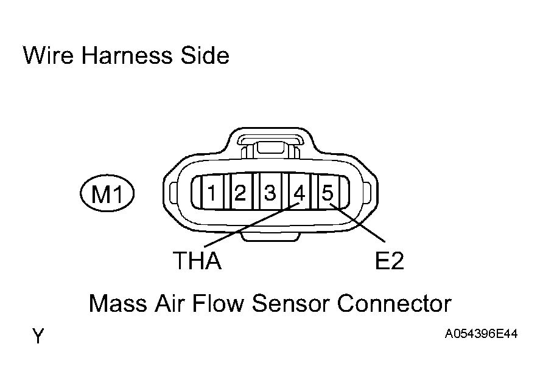
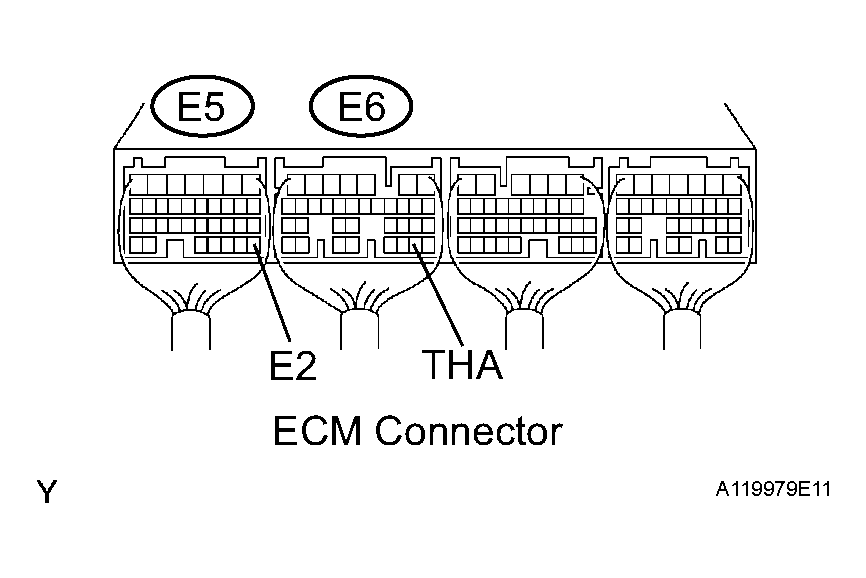
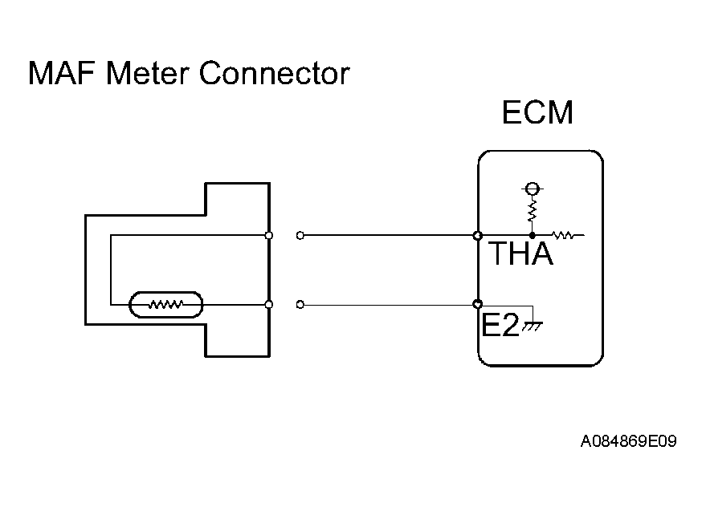
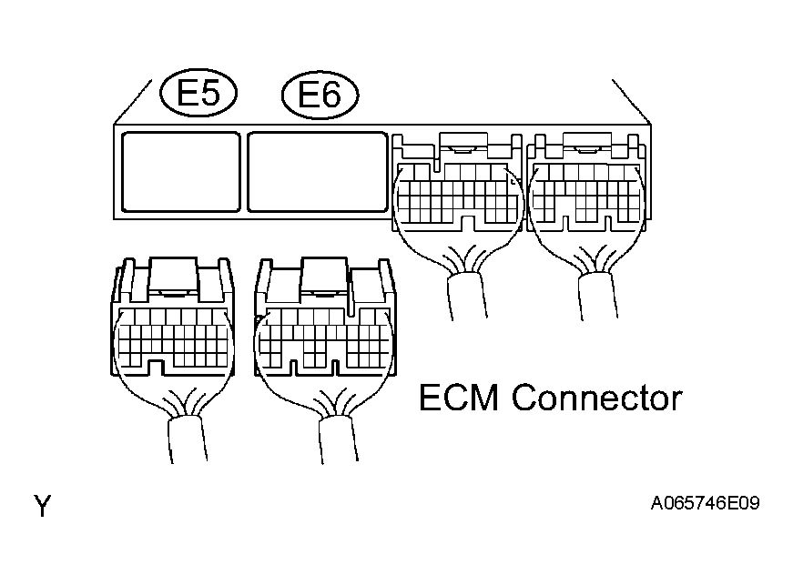

Inspection Procedure
HINT:
- If other DTCs relating to different systems that have terminal E2 as the ground terminal are output simultaneously, terminal E2 may have an open circuit.
- Read freeze frame data using the intelligent tester. Freeze frame data records the engine condition when malfunctions are detected. When troubleshooting, freeze frame data can help determine if the vehicle was moving or stationary, if the engine was warmed up or not, if the air-fuel ratio was lean or rich, and other data from the time the malfunction occurred.
- READ VALUE OF INTELLIGENT TESTER (INTAKE AIR TEMPERATURE)
- Connect the intelligent tester to the DLC3.
- Turn the ignition switch ON and turn the tester ON.
- Enter the following menus: DIAGNOSIS / ENHANCED OBD II / DATA LIST / PRIMARY / INTAKE AIR.
- Read the value displayed on the tester.
Standard: Same as actual Intake Air Temperature (IAT).
Result
RESULTTemperature Displayed Proceed to -40°C (-40°F) A 140°C (284°F) or higher B Same as actual IAT C HINT:
- If there is an open circuit, the intelligent tester indicates - 40°C (-40°F).
- If there is a short circuit, the intelligent tester indicates 140°C (284°F) or higher.
B: Go to step 4
C: CHECK FOR INTERMITTENT PROBLEMS
A: Go to Next Step
- READ VALUE OF INTELLIGENT TESTER (CHECK FOR OPEN IN WIRE HARNESS)
- Disconnect the M1 Mass Air Flow (MAF) meter connector.
- Connect terminals THA and E2 of the MAF meter wire harness side connector.
- Connect the intelligent tester to the DLC3.
- Turn the ignition switch ON and turn the tester ON.
- Enter the following menus: DIAGNOSIS / ENHANCED OBD II / DATA LIST / PRIMARY / INTAKE AIR.
- Read the value displayed on the tester.

Courtesy of © TOYOTA, LICENSE AGREEMENT TMS1002Standard: 140°C (284°F) or higher
OK: CONFIRM GOOD CONNECTION TO SENSOR. IF OK, REPLACE MASS AIR FLOW METER
NG: Go to Next Step
- READ VALUE OF INTELLIGENT TESTER (CHECK FOR OPEN IN ECM)
- Disconnect the M1 MAF meter connector.
- Connect terminals THA and E2 of the E5 and E6 ECM connectors.
HINT:
Before checking, perform visual and contact pressure checks on the ECM connector.
- Connect the intelligent tester to the DLC3.
- Turn the ignition switch ON and turn the tester ON.
- Enter the following menus: DIAGNOSIS / ENHANCED OBD II / DATA LIST / PRIMARY / INTAKE AIR.
- Read the value displayed on the tester.

Courtesy of © TOYOTA, LICENSE AGREEMENT TMS1002Standard: 140°C (284°F) or higher
OK: REPAIR OR REPLACE HARNESS OR CONNECTOR
NG: CONFIRM GOOD CONNECTION TO ECM. IF OK, REPLACE ECM
- READ VALUE OF INTELLIGENT TESTER (CHECK FOR SHORT IN WIRE HARNESS)
- Disconnect the M1 MAF meter connector.
- Connect the intelligent tester to the DLC3.
- Turn the ignition switch ON and turn the tester ON.
- Enter the following menus: DIAGNOSIS / ENHANCED OBD II / DATA LIST / PRIMARY / INTAKE AIR.
- Read the value displayed on the tester.

Courtesy of © TOYOTA, LICENSE AGREEMENT TMS1002Standard: -40°C (-40°F)
OK: REPLACE MASS AIR FLOW METER
NG: Go to Next Step
- READ VALUE OF INTELLIGENT TESTER (CHECK FOR SHORT IN ECM)
- Disconnect the E5 and E6 ECM connectors.
- Connect the intelligent tester to the DLC3.
- Turn the ignition switch ON and turn the tester ON.
- Enter the following menus: DIAGNOSIS / ENHANCED OBD II / DATA LIST / PRIMARY / INTAKE AIR.
- Read the value displayed on the tester.

Courtesy of © TOYOTA, LICENSE AGREEMENT TMS1002Standard: -40°C (-40°F)
OK: REPAIR OR REPLACE HARNESS OR CONNECTOR
NG: REPLACE ECM